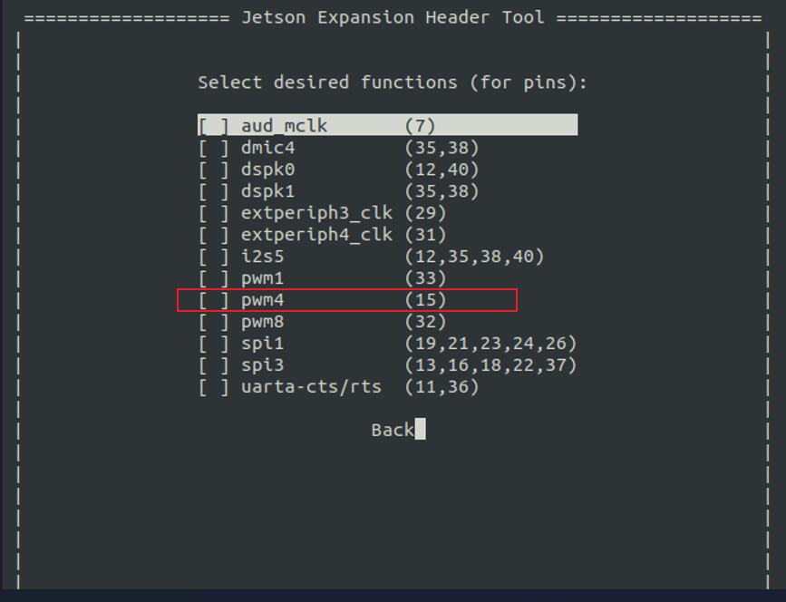
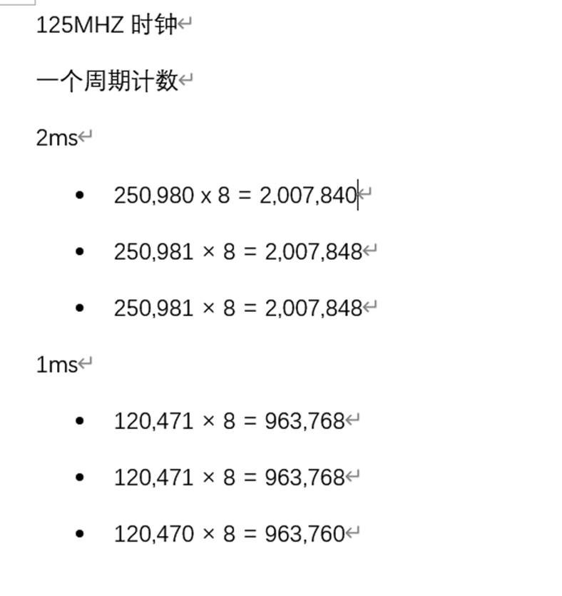
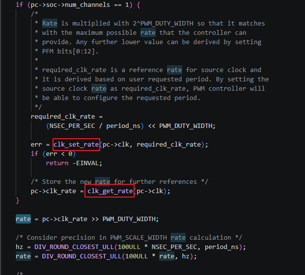

NVIDIA Jetson Nano Developer Kit Linux下pwm使用问题
背景
我想使用NVIDIA Jetson Nano Developer Kit Linux下pwm4的作为一个硬件定时给fpga，项目需要一个标志位给fpga作基准，保证实时性。
我想产生1ms即1000000ns的时钟时遇到了精度的问题。
分析过程
pwm4对应的是408MHz。

我使用的pwm4是使用前面提到的overlay的pwm4，pin15即

按理来说，408MHz时钟肯定是足够的，结果测出来发现

时间根本不准啊，和理想的情况误差相差很大。
最后查看内核驱动源码发现

发现这里pwm-tegre.c中clk_set_rate会按照你想要的周期去匹配所需的频率，但是我们使用的场景要求，这样的误差时间太大了。
根据调试，将内核代码中添加打印信息，打印出pc->clk_rate和rate。

pc->clk_rate = 3187500还有rate = 12并且查找相关TRM。
period = rate * (1/(pc->clk_rate/256))
问题符合。如何解决呢？
- 通过查看发现，其他pwm有19.2MHz 的频率，能真好除以分频值，可能是可以。pwm6是19.2Mhz，用做pwm-fan了
- 改变pwm4的父时钟，将父时钟改变成其他时钟源
- 改内核驱动源码，直接使用408MHz时钟，这样误差会变小很多。
使用方法1，nVidia有一个pinmux 的excel，可以生成pinmux 的设备树dtsi文件。

但是在使用过程中发现，这个方法需要重新使用BSP进行刷机，我们暂且放下寻找其他方法。
另外一种是使用加载时的dtb文件，使用dtc生产dts文件，修改设备树，添加pinmux，我们需要找到pwm所需的gpio。再或者使用overlay进行添加功能。前提是删除pwm6的风扇功能。
使用方法二，修改父时钟，

这是反汇编编译出来的dts文件，我想改变父时钟的频率，正常使用
assigned-clocks：指定需要被初始化的时钟，是操作的对象。assigned-clock-parents：为上一项指定的时钟设置新的父时钟源。assigned-clock-rates：为上一项指定的时钟设置期望的运行频率。
即可。
尝试完发现加载pwm驱动后linux直接卡死了，改变clocks的参数也一样。
方法三，修改源码，将pwm-tegre.c中clk_set_rate删掉并且需要保留256分频的计算。
|
|
修改发现使用的408MHz误差较小。
修改父时钟发现，发现时钟控制是通过bpmp控制，查看了相关资料，bpmp修改父时钟源也需要BSP进行刷机。
问题解决
发现官方文档有介绍用bpmp可以将pwm4的时钟锁起来，pwm-tegre.c中clk_set_rate就不会起作用。

设置rate为408000000即可，效果如下

通过fpga测得结果

误差在160ns。
补充pwm的框图